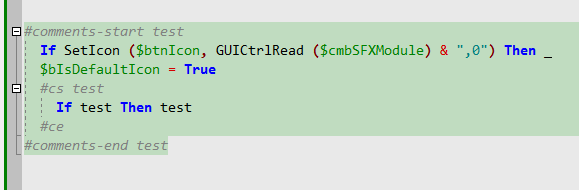

Tutorial:
Lexer rules
Intro
Make keywords bold
Basic folding rules
Rules for tree nodes
Rules for If without EndIf
Highlight brackets BG
Highlight multiline comments BG
All options of “Text range”
Name format string
Group format string
Collapsed text icon
Close block at end of text
Self closing range
Initially closed (no end rule)
Ignore as parent
Display in syntax tree
Can not be collapsed
Draw block staple
Auto closing text
Options “Parent block”, “Not a parent”
Intro
Lexer basics are shown already in the previous tutorial (about “WSH script” lexer). This tutorial will show how to configure “Rules” tab of SynWrite lexer props dialog, for “AutoIt” lexer (it’s already included in SynWrite).
You’ll see how to complete the following lexer tasks:
- make keywords bold
- create folding for blocks “If..EndIf”, “Select..EndSelect” etc
- create folding and tree nodes for “Func..EndFunc”
- handle special case “If without EndIf”
- create folding and BG highlighting for brackets ( ) [ ]
- create folding and BG highlighting for multiline comments
Editor look:

Make keywords bold
In “Rules” tab create a new rule “Reserved words”, then
- subtab “Properties”: set “Block type” to “Tag detector”.
- subtab “Conditions”: add single condition (button “+” near listbox), set its token type to “Id”, and paste full list of keywords (which are correct identifiers) into “Keys list” editor on the right. Don’t forget to check “Ignore case” flag.
- subtab “Highlight”: bind to this rule some style (this style should have “bold font” attribute and/or special font color, assigned as usual on “Styles” tab).
Basic folding rules
How to create folding rules for blocks “If..EndIf”, “Select..EndSelect”, “Switch..EndSwitch” etc. Example is for “Select..EndSelect”, others are similar. Open tab “Rules”, subtab “Properties”.
- Create beginning rule, rename it to e.g. “_Select” (edit field is below the rules listbox), set its “Block type” to “Range start”.
- Create ending rule, rename it to e.g. “_EndSelect”, set its “Block type” to “Range end”.
- Link both rules: set for rule “_Select” “Range end condition” = “_EndSelect”, and optionally set for rule “_EndSelect” “Range start condition” = “_Select”.
- For beginning rule open subtab “Conditions”, create a single condition (button “+” near listbox), and setup it so that it catches token type “Id” with value “Select”. (Set token type in the checker-listbox below the conditions listbox; and set value in the editor labeled “Keys list”). Don’t forget to set field “Condition” = “Equal”.
- For ending rule open subtab “Conditions”, create a condition, and setup it so it catches token type “Id” with value “EndSelect”.
You have created and linked two rules: beginning and ending. Now it’s needed to set up this pair a little: click beginning rule name, click subtab “Text range”, uncheck “Display in syntax tree”, and check “Draw block staple”. Other flags leave unchecked, not needed for simple lexer.
You see that in the result AutoIt lexer many rules are configured this way.
Rules for tree nodes
Create the similar rule pair _Func/_EndFunc (with token type “Id” and values “Func” and “EndFunc”). This pair needs to be in syntax tree, so click beginning rule _Func, click subtab “Text range”, and check flag “Display in syntax tree”.
Now need to setup tree nodes: we need to see e.g. “Func MyName”, not some random word. Click subtab “Text range”, edit field “Name format string” to value “%s0 %s-1”. This means that tree item will show tokens [0] and [-1]. It’s hard to say which token numbers to use, it depends on some stuff, just tested that 0 and -1 are ok numbers (0 is the token at rule start and -1 is next one).
Rules for If without EndIf
Create the similar rule pair _If/_EndIf (with token values “If” and “EndIf”). Don’t check “Display in syntax tree” of course. Now we need to solve AutoIt issue:
- multi-line “If..Then..EndIf” must be folded
- one-liner “If..Then” doesn’t need ending “EndIf” and must not break folding
This is shown on image:

Outer Ifs are multi-line and have EndIf, and inner If is one-liner, it doesn’t have EndIf. This image shows final OK editor, with a trick applied. If you don’t make a trick, the inner If will catch outer EndIf and break the folding. How to setup the trick?
1) Create new token type “OneLinerThen” (on tab “Common”) and create new parser for it (on tab “Parsers”):
- “Token type” = “OneLinerThen”
- “Token style” = same style as for keywords
- Tricky regex, which catches word “then” only if it’s followed by spaces and some word (see “Lookbehind assertions” in SynWrite help about RegEx):
(?i)then\b(?=\x20+\w)
- Move this new parser above “Id” parser.
2) For rule “_If” clear “Range end condition” as we now want to have 2 ending rules for If: one already created “_EndIf” and new one “_EndIf_OneLiner”, with the same “Range start condition” = “_If”.
3) For new ending rule “_EndIf_OneLiner” in subtab “Conditions” create single condition: token type “OneLinerThen” and no token value (empty “Keys list”).
Highlight brackets BG
This step is optional, as SynWrite can highlight brackets BG by option “Highlight pair brackets”. But e.g. for Pascal lexer we may use this step to highlight pair tokens “begin”/”end”.
Create rules pair: opening rule “(“ and closing “)” and link this pair as with _If/_EndIf. For rule “(“ click subtab “Conditions” and add condition with token type “Symbol” and token value “(“. For rule “)” add condition with token type “Symbol” too and token value “)”.
Set up opening rule:
- subtab “Text range”: uncheck all flags. No need to show this block in tree nor no need to fold.
- subtab “Highlight”: assign style to this rule. This style better have BG color only (“Style type” = “Only background” in style options).
- subtab “Highlight”: set “Highlight type” = “Only bounding tokens” so only brackets will be highlighted, not entire brackets block.
- subtab “Highlight”: set “Caret position” = “Bounds of the range” so brackets will be highlighted only when caret is on one of them.
Create rules for brackets [ ] the same way.
Highlight multiline comments BG
AutoIt has multi-line comments from “#comments-start” or “#cs” to “#comments-end” or “#ce” keywords. These comments can be inserted one into another. It’s hard and not nice to highlight such comments by Parser, e.g. by gray color - commented block will be all gray. Better we can - highlight only BG of such comments and leave usual text color of commented range. Example:

Create rules pair “_cs” and “_ce” similarly to brackets rules above.
For rule “_cs” in subtab “Conditions” add single condition:
- don’t set its token type (all checkboxes unchecked)
- set field “Condition” to “Mask” (ie, regex)
- set “Keys list” to two strings (we escape # char with a backslash):
\#comments-start
\#cs
The same way set up rule “_ce” with two strings:
\#ce
\#comments-end
Now set up rule “_cs” on subtab “Highlight”:
- set “Style” to some style, which has BG color only (to not override text color of commented range).
- set “Highlight type” = “All range”.
- set “Caret position” = “Any position (always)”.
Note that condition setup was a little tricky: we couldn’t set some “token type” for condition because we haven’t parser for text “#comments-start” (ready parser “Comment” is not fully ok).
All options of “Text range”
Name format string
For tree nodes only. Documented in file “Readme\LexerConfig.chm”. Contains text and token specifiers. E.g. you may:
- show token [0]: “%s0”
- show tokens range [0..-3]: “%s0~s-3”
- show tokens from [0] to line end: “%sz0”
- show tokens from line start to [2]: “%sl2”
- show tokens from [0] to [end of rule] minus 2 tokens: “%s0~e2”
- show tokens from [0] to token value “>” minus 1 token: “%s0~s[>]1”
- show token from parent range: “%ps0”
Group format string
Uses same format as “Name format string”.
Needed not empty if we want to put tree nodes into some group, e.g. you may enter “\Functions” and see all funcs inside “Functions” root node, or e.g. enter “Classes” to group classes nodes.
Collapsed text icon
Uses same format as “Name format string”.
Used to show text for collapsed folding block. Better set to same value as “Name format string”.
Close block at end of text
Sometimes file may not contain text to match the ending rule (but it still may contain it in some cases). Check this flag to force close opened block at end of file.
Self closing range
Sometimes block beginning also means ending of the previous block of the same type. E.g. in “Markdown” lexer: any “paragraph header” means closing of the previous paragraph. So this flag is needed. Usually used with “Close block at end of text”.
Initially closed (no end rule)
Means that beginning rule doesn’t have any ending rule. Such “empty” block cannot be folded of course, but still can be shown in the tree. Needed when it’s hard to create ok ending rule.
Ignore as parent
Means that option “Parent block” from subtab “Properties” won’t consider this block as possible parent. Very rarely needed.
Display in syntax tree
Enables to show tree node for this rule.
Can not be collapsed
Disables folding for this block.
Draw block staple
Enables so called “indentation guides” for this block. Ie, optionally-styled vertical lines which are drawn from block beginning to end.
Auto closing text
Can enable auto-entering of some text, when beginning text (for beginning rule) is entered and Enter is pressed. E.g., in C lexer this option can enable auto-entering of “}” on a new line, when “{“ typed and Enter pressed. Text must be in the edit field below the flag.
Options "Parent block", "Strict parent", "Not a parent"
Parent rule is the rule of parent-node of current node in syntax-tree.
Example. Current rule is A, it's "parent block" cleared or set to P.
- If "Parent block" cleared, no checking of parents made.
- If "Not a parent" set, then parent of A can be any rule *except* rule P.
- If "Strict parent" set, then parent of A must be P, and P must be *nearest* parent, not parent of parent (of parent...) of A.
- Not sure what means "strict parent" and "not a parent" both set.